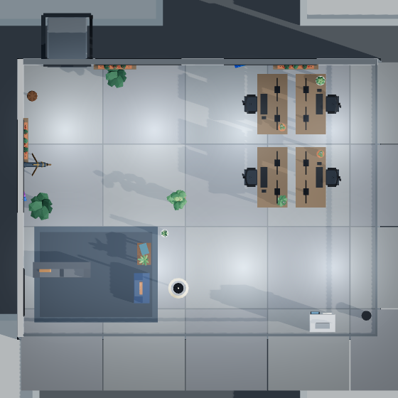

01 / 30
Lookout and a Wire Room
4 desks 1 team of 4 pods night-shift
4 desks in one team, clusters of desks, screens meeting in the middle, off a street down the length of the room. Work comes and goes by a printer, with no courier. Lookups go to a telescope at the window. The break end has two things to sit on, kept away from the quiet desks. Night Shift: a tower floor lit by its own panels most of the day.
1 rug 2 soft seats 4 plants 4 stations
- plan
- 88
- daylight
- 72
- looks
- 78
variety-1
open this office →